Read the synthesis → — all of these papers explained together as one narrative, instead of one card at a time.
Sections below are a curated, knowledge-based overview — except the ranked list, which is citation-mined (Semantic Scholar Graph API, live query, real counts) like the sibling folders elsewhere in this repo. PDFs are in pdfs/; each ranked paper's gist figure was extracted locally with src/process_paper.py.
A world model is a learned internal model of an environment's dynamics: given the current observation (and, in the action-conditioned case, an action), it predicts what happens next — the next observation, state, or reward — without needing to actually step the real environment. A world-action model (sometimes written world–action model, or WAM) is the action-conditioned special case made explicit: it learns p(st+1 | st, at), i.e. dynamics as a function of the agent's own actions, so it can be queried as a simulator — "if I do a, what happens?" — and used for planning, policy training inside imagined rollouts, or evaluating a robot policy offline. Plain world models describe how a scene evolves; world-action models describe how it evolves because of what an agent does to it, which is the piece that connects world models to robotics and VLA policies.
Scaling world models to internet-scale video turns them into general-purpose "what happens next" simulators, action-conditioned or not:
Cosmos-Surg-DVRK, Cosmos-H-Surgical in MedicalVLAs).The branch most relevant to this repo's VLA work: using an action-conditioned world model as the robot's internal simulator, either to train the policy inside imagined rollouts, to generate synthetic training video, or to score/evaluate a policy without running the real robot.
A VLA policy maps observation+instruction → action. A world-action model is the complementary piece: observation+action → next observation. Put together, they close the loop without touching hardware — train or evaluate the policy against the world model's imagined rollouts instead of (or in addition to) the real environment. That is exactly the role Cosmos-Surg-DVRK and Cosmos-H-Surgical play for surgical VLAs in MedicalVLAs, and the role Dreamer-style world models play for Sergey Levine/Physical-Intelligence-style model-based RL.
Methodology: queried the api.semanticscholar.org/graph/v1/paper/search endpoint (query variants "world model" / "world action model", year=2025-2026), merged and deduplicated the results, then kept only papers whose core contribution is a world model or world-action model (dropping the many generic VLA papers that just mention "world" in passing), sorted by Semantic Scholar citation count. Two of the twenty (Cosmos, V-JEPA 2) weren't in the top of that relevance-ranked query and were looked up directly by arXiv ID. Each paper's PDF was pulled from arXiv into pdfs/ and its "gist" figure — the one diagram that best captures the paper's core idea, almost always Figure 1 or the main architecture/overview figure — was extracted with src/process_paper.py (a couple needed a manual crop where the auto-cropper picked up title/author text alongside a top-of-page figure).
A platform of pretrained, open-weight "world foundation models" (diffusion and autoregressive) meant to be fine-tuned into customized world models for downstream Physical AI — the digital-twin-of-the-world counterpart to a policy model's digital-twin-of-itself. Ships a video curation pipeline, pretrained WFMs, post-training examples, and video tokenizers.
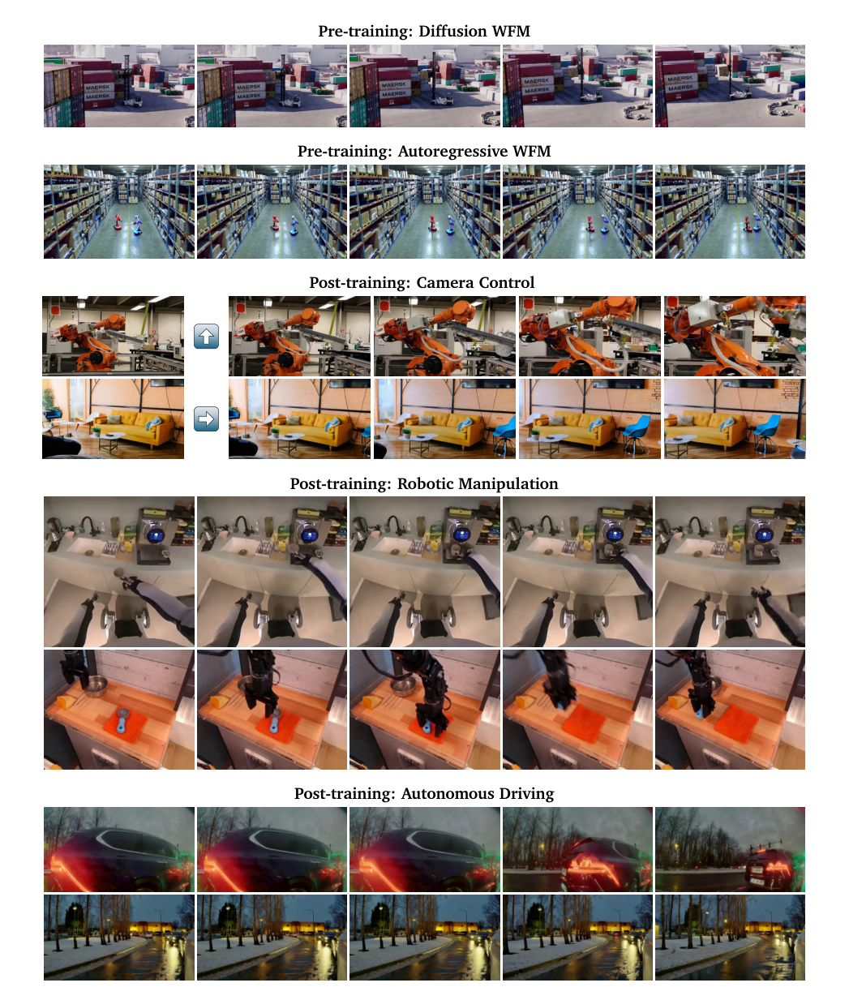
Pretrains an action-free joint-embedding predictive architecture on 1M+ hours of internet video, reaching state-of-the-art motion understanding and action anticipation, then post-trains an action-conditioned world model (V-JEPA 2-AC) on under 62 hours of unlabeled robot video. The resulting model plans zero-shot on real Franka arms in new labs — pick-and-place with image goals, no robot-specific data or reward.
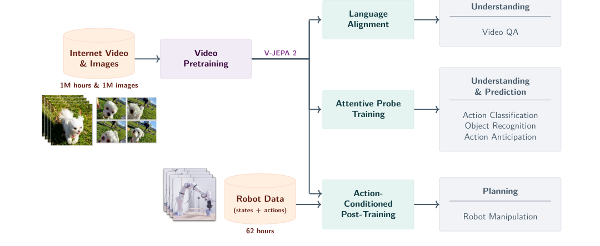
Unifies a VLA action model and a world model in one autoregressive framework: the world model predicts future images from action+image to learn environment physics, while the action model's image understanding improves in turn. Finds that naive autoregressive action-chunk generation degrades from error propagation, and fixes it with an attention-mask strategy that hides prior actions when generating the current one.
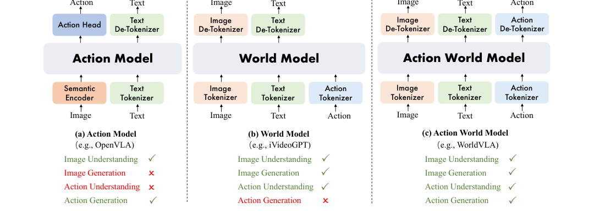
DreamZero is a 14B World Action Model built on a video-diffusion backbone that jointly predicts future video and actions, learning physical dynamics from heterogeneous robot data without repetitive demonstrations — over 2× better generalization to new tasks/environments than state-of-the-art VLAs, running real-time closed-loop control at 7Hz. Also shows cross-embodiment transfer from human/other-robot video and few-shot adaptation to a new embodiment with 30 minutes of play data.
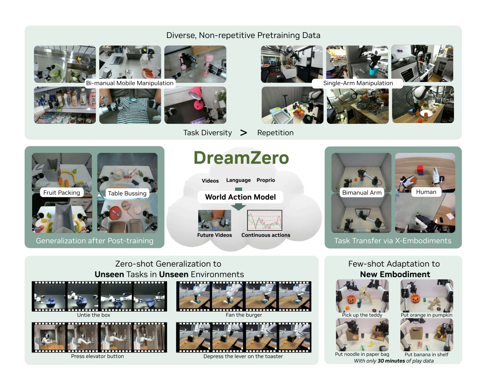
Instead of just forecasting future images, DreamVLA forecasts dynamic, spatial, and semantic world knowledge jointly, forming a perception–prediction–action loop closer to how humans reason before acting. A block-wise attention mask keeps the three knowledge streams disentangled during training; reports 76.7% real-robot success and 4.44 average task length on CALVIN ABC-D.
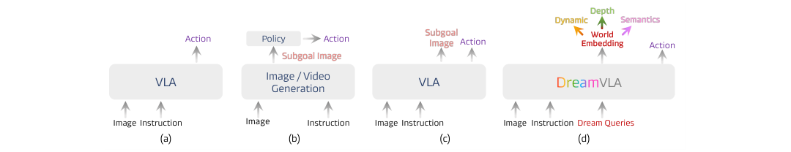
A latent diffusion world model that generates high-resolution, spatiotemporally consistent multi-camera driving video conditioned on ego dynamics, agent configurations, environment, and road semantics, across geographically diverse regions (UK/US/Germany). Built to scale-simulate both common and rare driving scenarios for AV development.
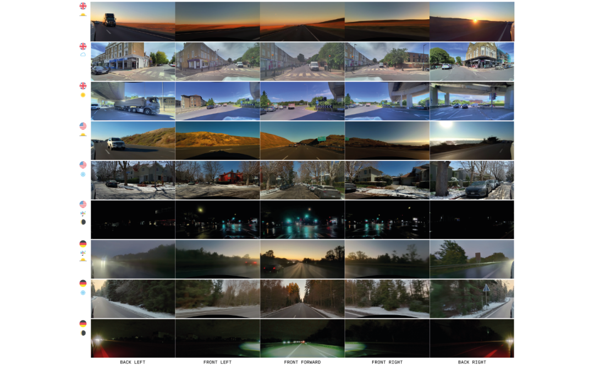
A Mixture-of-Transformer architecture fuses understanding, video-generation, and action experts into one model that can switch between acting as a world model, a VLA, an inverse-dynamics model, or a video-action joint predictor. Learns "delta actions" from optical flow for large-scale action pretraining; reports +15% over X-VLA and +45% over π0.5 in simulation, +11–48% on real robots.
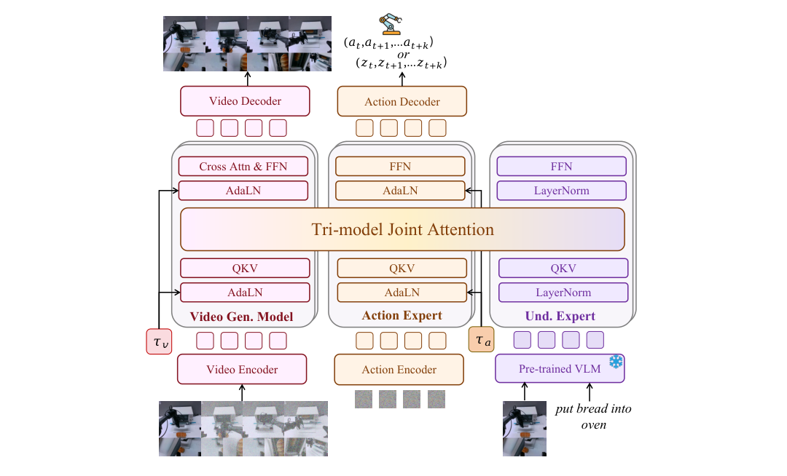
WoTE adds a latency-efficient Bird's-Eye-View world model to an end-to-end driving stack purely to score candidate trajectories: it forecasts future BEV states for each candidate and picks the one a reward model ranks highest, supervisable directly from off-the-shelf BEV-space traffic simulators. State-of-the-art on NAVSIM and the closed-loop Bench2Drive/CARLA benchmark.
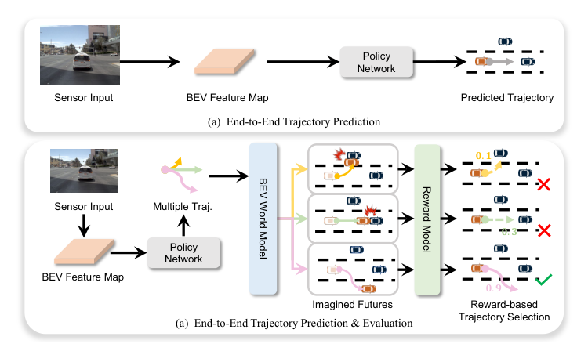
Asks whether World Action Models' benefit comes from video modeling during training or explicit future-video imagination at test time — the latter being the source of most WAM inference latency. Fast-WAM keeps video co-training but skips test-time future prediction, staying competitive with imagine-then-execute WAMs (LIBERO, RoboTwin, real robots) while running 4× faster at 190ms latency; dropping training-time video co-training hurts far more than skipping test-time imagination.
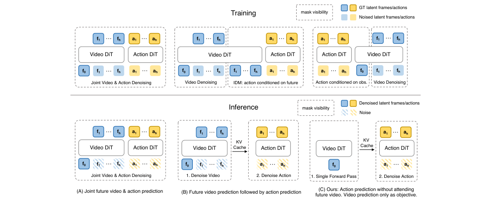
A few-step autoregressive-diffusion interactive world model that generates minute-level, keyboard/mouse-controllable video at 25 FPS, trained on ~1,200 hours of Unreal Engine + GTA5 footage with frame-level action injection. Open-sourced model weights and codebase.
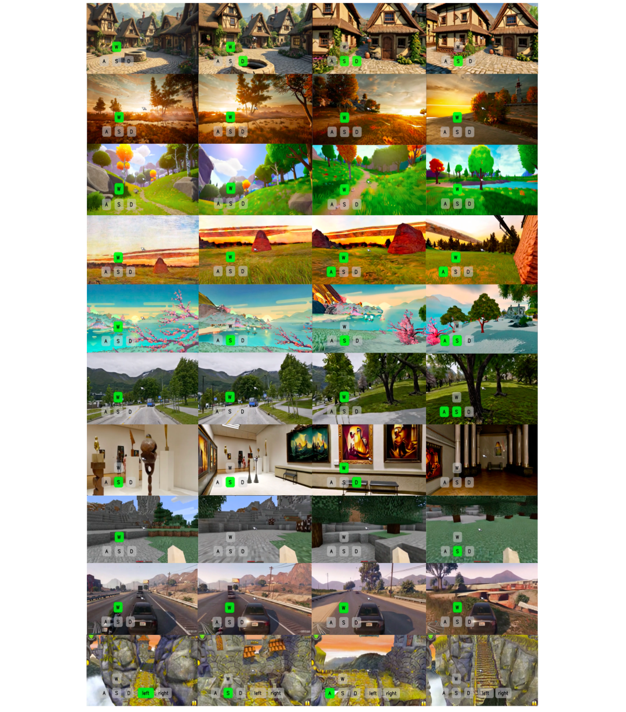
A multi-view, action-conditioned world model (trained on DROID: 95k trajectories, 564 scenes) that stays spatially/temporally consistent for 20+ seconds under novel scenes and camera placements, via pose-conditioned memory retrieval and frame-level action conditioning. Ranks generalist robot policies without real rollouts, and fine-tuning on its own imagined successful trajectories improves policy success by 44.7%.
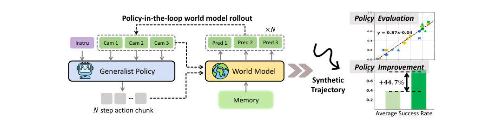
Decouples temporal dynamics from fine-grained future-frame generation and integrates trajectory planning directly into the video-diffusion loop, rather than modeling a fixed-length clip's joint distribution all at once. A "chain-of-forward" training strategy tames autoregressive error accumulation; reports 7.4% FVD improvement, minutes-long generation, and out-performs strong end-to-end planners on NAVSIM when used as a real-time planner itself.
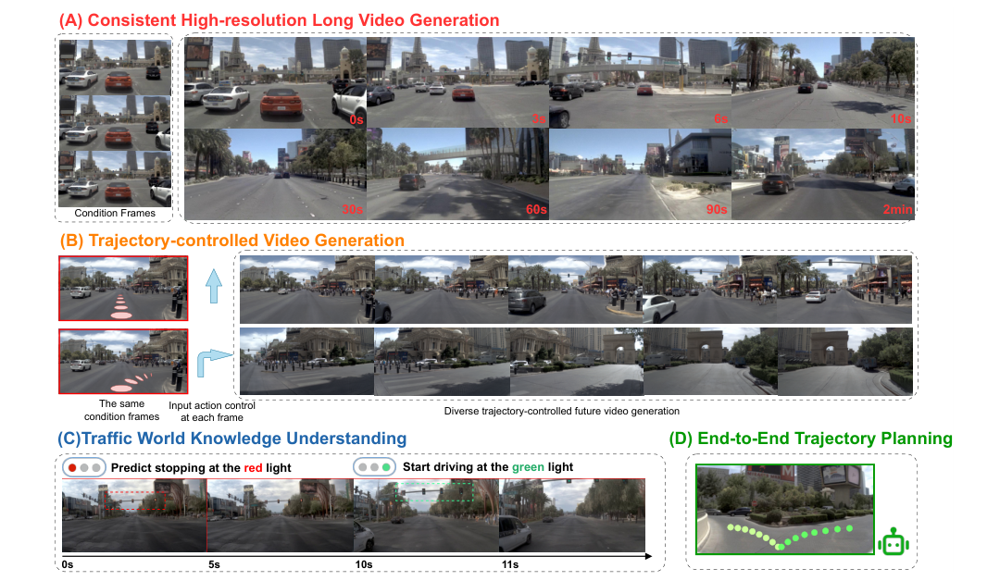
Removes the need for costly perception annotations in end-to-end driving by predicting multiple intention-driven future latent states with a vision-foundation-model-backed world model, then self-supervising against actual future observations. A world-model-selector module picks the best of several generated planning trajectories; reports 18.0% lower L2 error, 46.7% lower collision rate, and 3.75× faster training convergence on nuScenes/NavSim.
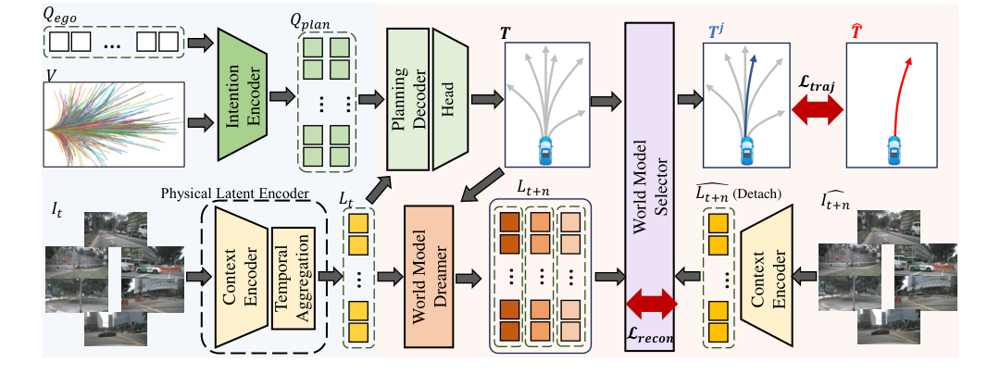
A visual-action autoregressive Transformer that tokenizes game scenes and actions and next-token-predicts the consequent scene, with a parallel decoding scheme that generates 4–7 FPS for real interactive play. Introduces new metrics that score action-following fidelity, not just visual quality, and outperforms prior diffusion-based Minecraft world models on both.
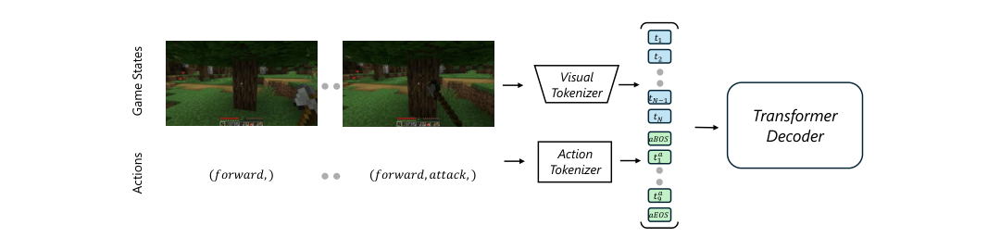
Most WAMs entangle action accuracy with future-video quality; GigaWorld-Policy decouples them with a causal design where action tokens can't be influenced by future-video tokens, so video generation becomes optional at inference for faster action prediction while still supervising training with both objectives. Runs 9× faster than Motus while improving task success 7%, and beats π0.5 by 95% on RoboTwin 2.0.
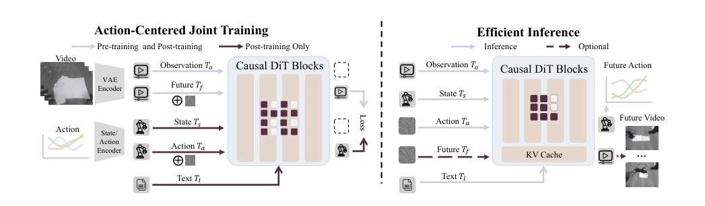
Targets all three properties a truly interactive world model needs at once — real-time long-horizon streaming, consistent spatial memory, and precise control — usually achieved only in isolation. A 14B model compresses history into camera-aware latent tokens in the KV cache for 3D-consistent long-term memory, distilled from a bidirectional teacher into a causal real-time (16 FPS) student generator.
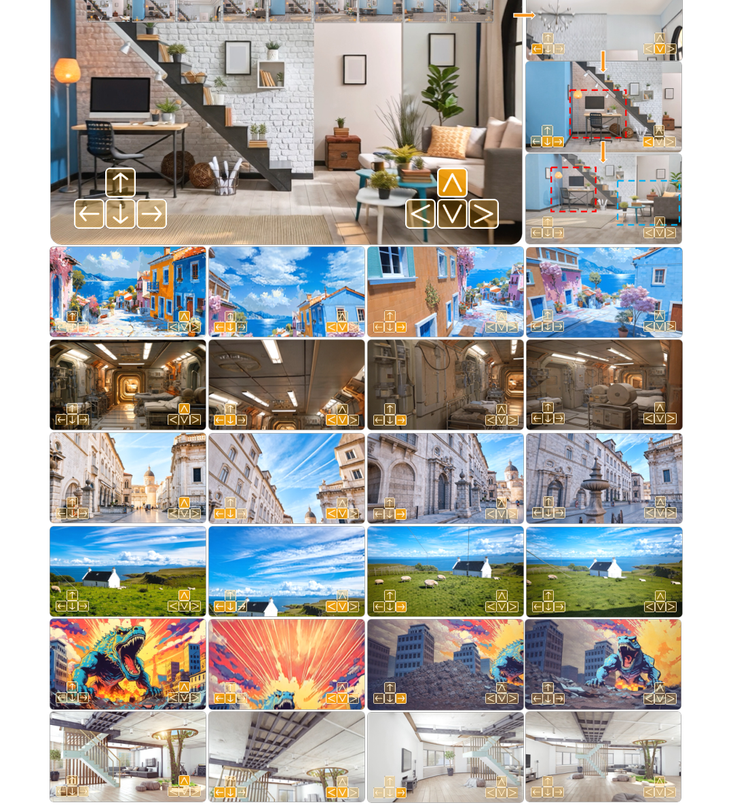
A 14B generative world model trained on 2 million robot interaction trajectories, testing the hypothesis that physical intuition (unlike passive video models such as Sora) must come from causally-rich real-world interaction. Finds the model's physics understanding is a probabilistic distribution prone to hallucination, and constrains it toward realism with SOPHIA (VLM agents iteratively refining the generation) plus a co-trained inverse-dynamics model that closes the imagination-to-action loop.
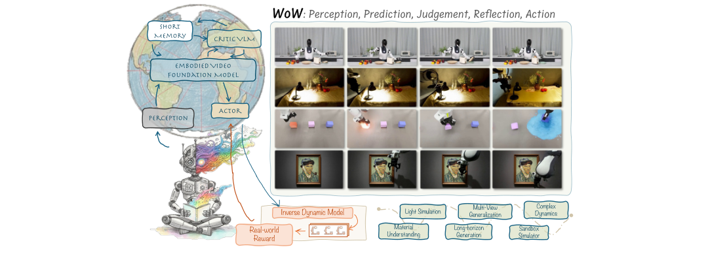
Prior driving world models generate future scenes but don't reason about the present one; Hermes unifies both by injecting "world queries" — world knowledge fused into BEV features via causal attention inside an LLM — so the same representation serves understanding and generation. Reduces generation error by 32.4% and improves understanding (CIDEr) by 8.0% on nuScenes / OmniDrive-nuScenes.
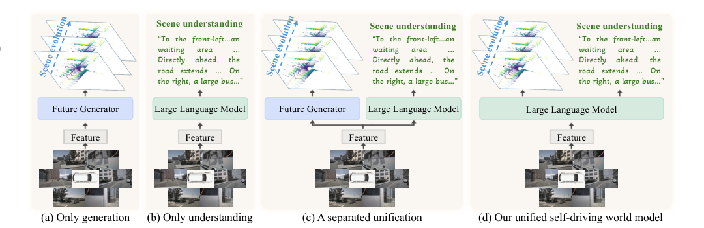
Turns a video generation model into a policy evaluator: Policy2Vec converts robot actions into a latent-action signal the video model can faithfully follow (naive high-dimensional action encodings don't produce action-following video), then WorldEval automates online policy ranking and functions as a safety detector against dangerous newly-trained policies. Shows strong correlation between WorldEval scores and real-world outcomes, outperforming real-to-sim evaluation baselines.
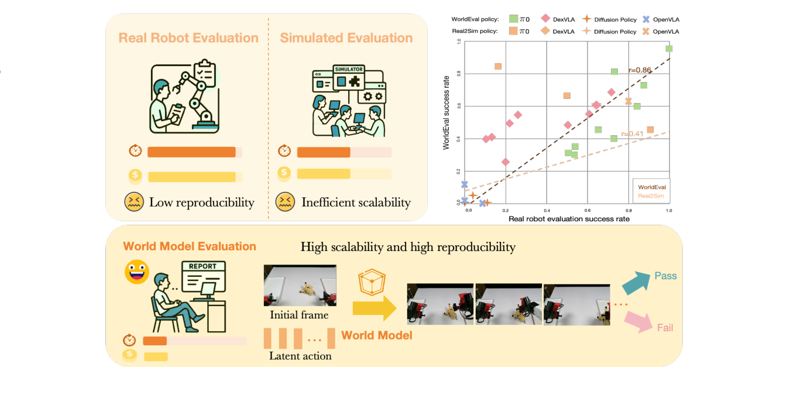
Argues prior latent-action pretraining objectives stay anchored to pixel variation rather than action-relevant state transitions, making them vulnerable to appearance bias and information leakage. VLA-JEPA fixes this with leakage-free JEPA-style prediction — a target encoder sees future frames only as a supervision target, never as model input — then fine-tunes an action head on top; a simpler two-stage recipe with consistent gains on LIBERO, LIBERO-Plus, SimplerEnv, and real robots.
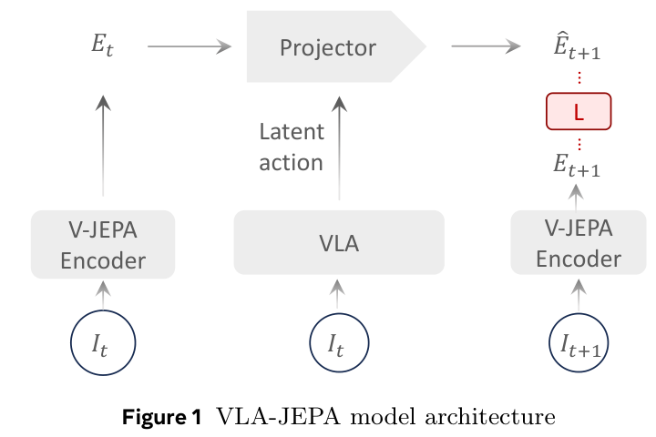
Papers added outside the citation-mined top-20 above (so no rank badge or citation count); gist figures extracted the same way with src/process_paper.py.
An autoregressive diffusion framework that learns frame prediction and policy execution at once, arguing video world modeling is an independent pretraining foundation for robot learning alongside vision-language pretraining. Three pieces: a shared vision+action latent space driven by a Mixture-of-Transformers, a closed-loop rollout that keeps re-grounding on ground-truth observations, and an asynchronous inference pipeline that overlaps action prediction with motor execution. Reports 92.0% on RoboTwin 2.0 and 98.5% on LIBERO, over 20% above π0.5 on hard real-world tasks with only 50 adaptation demos, plus emergent long-range temporal memory; code, model, and checkpoints public.
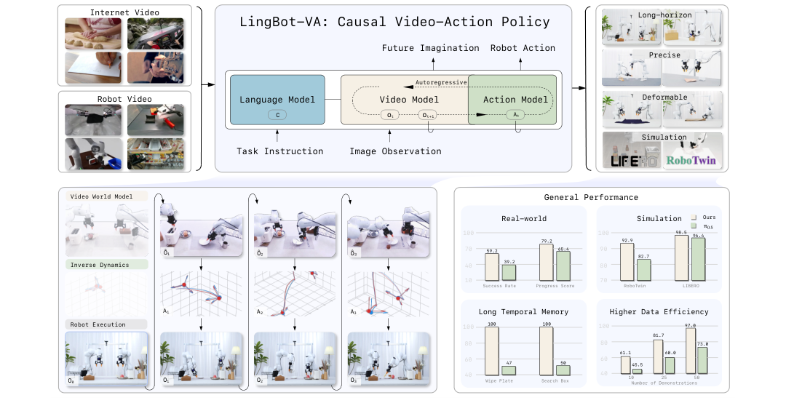
The sequel's thesis: repurposing video generators built for digital content creation is the wrong starting point for embodiment, so build the video-action model natively instead. Four changes from LingBot-VA — a semantic visual-action tokenizer (SemVAE) that aligns visual latents with semantics and actions rather than reconstruction, causal pretraining from scratch to dodge the catastrophic forgetting of adapting bidirectional backbones, a sparse-MoE backbone for capacity without inference cost, and an enhanced asynchronous scheme that predicts future latents in parallel with execution while re-grounding each rollout via learned forward dynamics. 93.6% average on RoboTwin 2.0 (+14.0 points over π0.5, and only 0.6 points between clean and domain-randomized), with acceleration lifting asynchronous control from 35Hz to 225Hz.
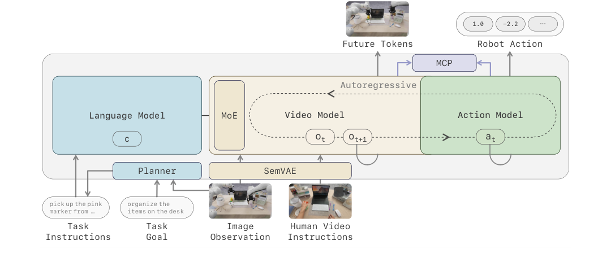
WAMs need tens of denoising steps, which rules out real-time control, and off-the-shelf step distillation breaks here because the video and action streams run different SNR-shifted noise schedules and arrive at training with very different marginal noise. Flash-WAM picks a consistency function per modality to match its noise regime — linear-gradient-scaling for the action stream's low-noise regime, variance-preserving for the video stream's high-noise regime — from a structural analysis of what gradient scaling the consistency boundary condition permits. On LingBot-VA it compresses both modalities to a single step: per-chunk latency drops from 8.1s to 348ms on an L40S (23×), keeping 85.5% RoboTwin 2.0 / 95.7% LIBERO and 60% on a Unitree G1 humanoid, where naive consistency distillation collapses to 24% at the same step budget.
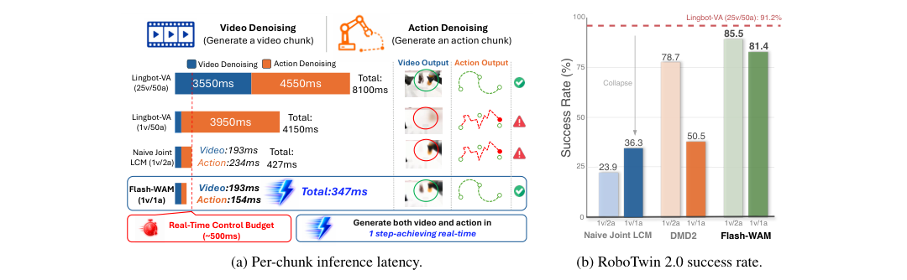
Post-training quantization transfers badly to WAMs because it assumes open-loop objectives, homogeneous models, and calibration data that doesn't match deployment. QuantWAMs matches each quantization decision to its calibration context with three strategies: shared-basis outlier calibration (pool activation statistics only across coordinate-compatible modules), co-training-objective saliency (empirical-Fisher scores from the joint video–action gradient, assigning weight precision at a calibration-stable layer granularity), and fixed-intervention rollout auditing (revise denoising-step protection schedules using reachable closed-loop states, same precision budget). On Fast-WAM and LingBot-VA, a W4A4-dominant setting lands within 0.2–0.7 points of FP16 in simulation, holds up on an AgiBot G2, and cuts peak weight+activation memory to ~29% of FP16 with 1.4–1.6× block-level speedups.
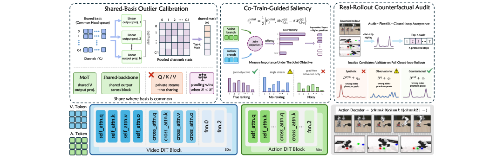
WAMs stay reliable over long horizons by re-grounding in real observations rather than rolling out recursively, but existing feedback refreshes history or the KV cache only at chunk boundaries — too coarse to fix per-timestep prediction error. Feedback Flow Matching pushes re-grounding inside the chunk being generated: a masked pseudoinverse correction on the conditional velocity field, using the preceding action chunk to steer the next one and the image observed after executing it to steer the next frame prediction. That cross-chunk pairing forms an asynchronous loop that corrects drift without waiting for boundaries, and it needs no training. On DreamZero (joint-generation) and LingBot-VA (stage-wise): +3.0 points equal-weight success across 42 RoboTwin 2.0 tasks, +0.6 pooled on LIBERO (+2.5 on LIBERO-Goal and LIBERO-10), plus better state tracking on recorded physical-robot observations.
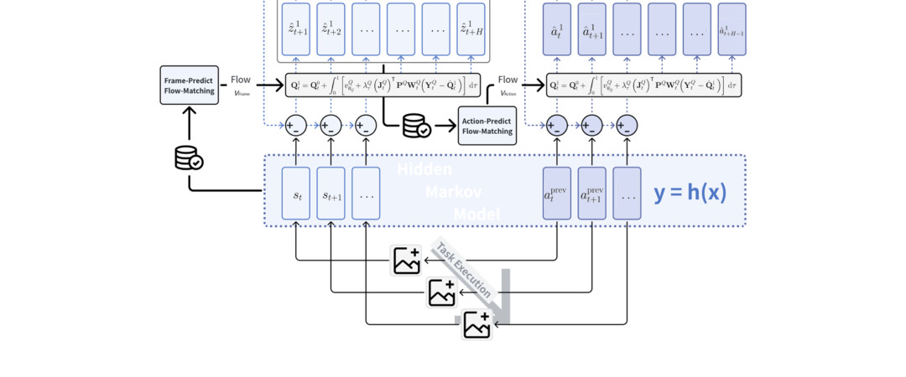
These are VLA policies, not world models — included because they are the baseline the world-action-model papers above are measured against (π0.5 is the comparison point in nearly every one), and because the series drifts toward world modeling as it goes: π0.7 puts an explicit world model in its inference-time loop. All from Physical Intelligence except πR² at the end, which only borrows the name; gist figures are each paper's Figure 1 (or Figure 2 for FAST), cropped where the auto-extractor picked up surrounding text.
The one that set the template: a flow-matching action expert bolted onto a pretrained VLM, so the policy inherits internet-scale semantic knowledge and emits continuous high-frequency action chunks (up to 50Hz) for dexterous tasks. Trained on a large cross-embodiment dataset — single-arm, dual-arm, and mobile manipulators — then evaluated on direct prompting, following language from people or from a high-level VLM policy, and post-training to new skills like laundry folding and table bussing.
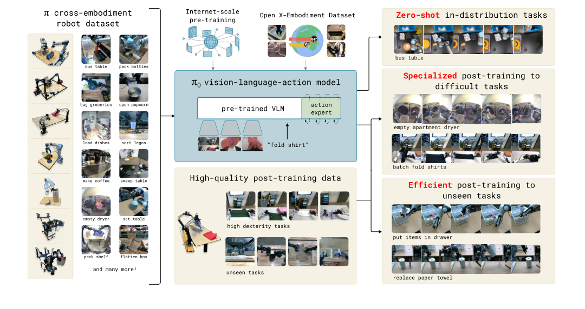
Built on π0, but co-trained on deliberately heterogeneous sources — multiple robots, web data, object detection, semantic subtask prediction, and low-level actions as hybrid multimodal examples — on the argument that this knowledge transfer, not more robot data, is what buys generalization. Runs as a two-level policy: predict the semantic subtask, then the actions for it. First demonstration of an end-to-end learned system doing long-horizon dexterous work — cleaning a kitchen or a bedroom — in homes it has never seen.
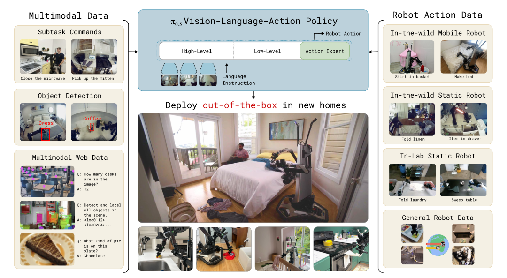
Adds RL from real deployments via RECAP — RL with Experience and Corrections via Advantage-conditioned Policies. The generalist is pretrained with offline RL (that model is π*0.6), then specialized per task on a mix of demonstrations, autonomous rollouts, and expert teleoperated interventions; a value function fine-tuned on the online data supplies advantage estimates the policy is conditioned on. Folds laundry in real homes, assembles boxes, and pulls espresso on a professional machine — on the hardest tasks it more than doubles throughput and roughly halves the failure rate.
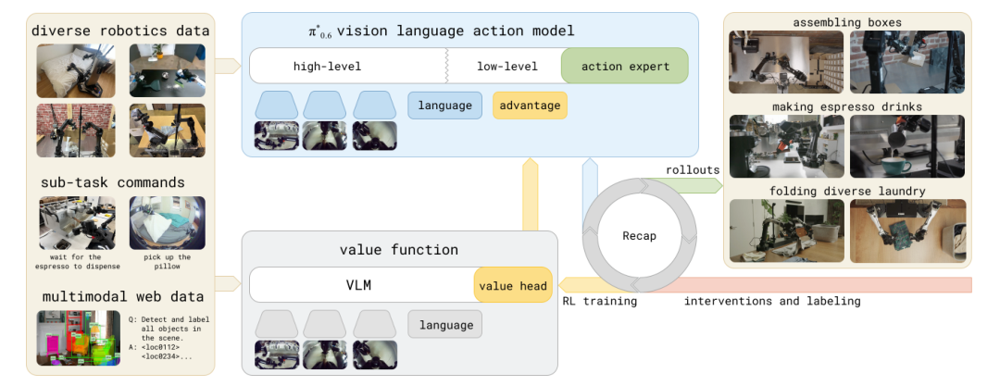
The idea is diverse context conditioning: the prompt carries not just what to do but how — subgoal images and metadata about task performance and length — which makes very messy data usable (demonstrations, suboptimal autonomous rollouts including failures, egocentric human video) and lets the model be steered at inference by asking for the desired metadata. Yields zero-shot cross-embodiment transfer (folding laundry on a robot that never saw the task) and out-of-the-box espresso-machine operation matching much more specialized RL-finetuned models; notably, the inference stack pairs a high-level policy with an explicit world model.
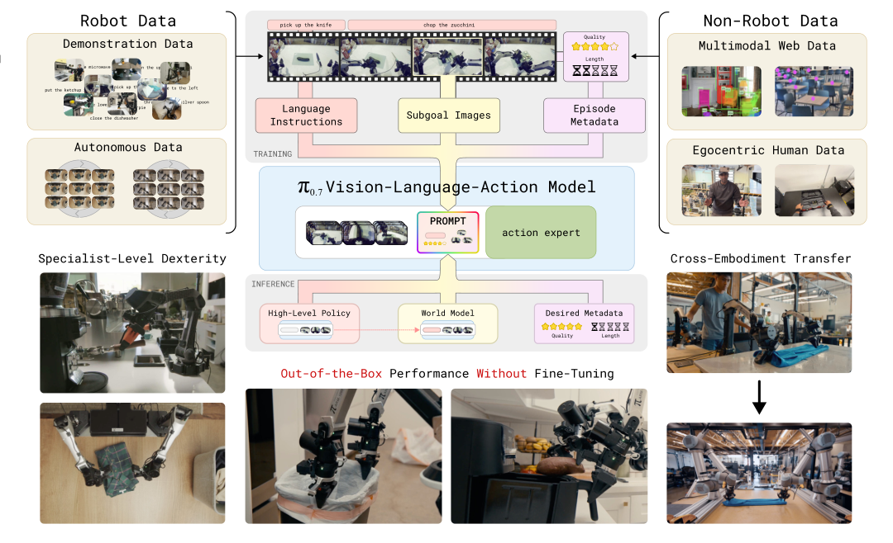
Not π-numbered releases, but the components the series is built out of — action tokenization, hierarchical instruction following, training dynamics, and real-time execution.
Per-dimension, per-timestep binning of continuous actions falls apart on high-frequency dexterous data: consecutive tokens are so correlated that next-token prediction is trivially satisfied by copying, and the model settles into a poor local optimum. FAST instead compresses action chunks in frequency space with a discrete cosine transform before tokenizing, which makes autoregressive VLAs trainable on tasks where standard discretization fails outright. Ships FAST+, a universal tokenizer trained on 1M real robot trajectories, usable black-box across action spaces and control rates; with π0 it scales to 10k hours of robot data and matches diffusion VLA performance at up to 5× less training time.
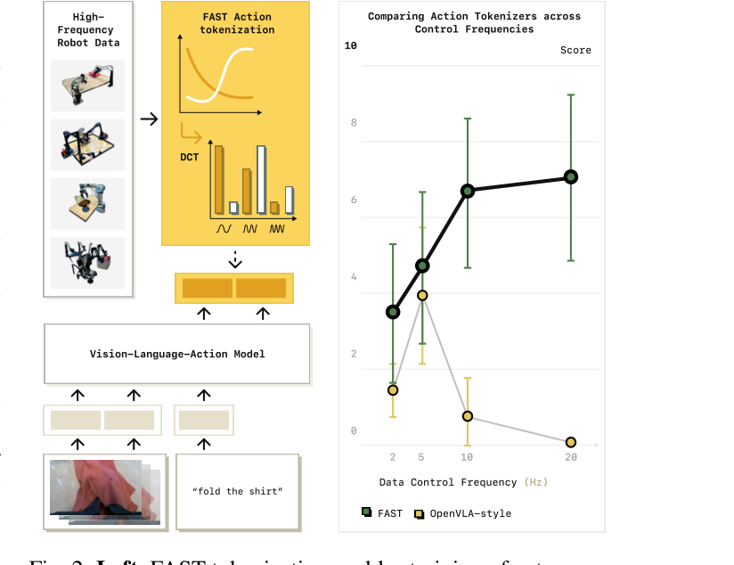
Complex prompts ("make me a vegetarian sandwich"), mid-task corrections ("that's not trash!"), and standing constraints ("I'm allergic to pickles") can't be handled by a flat instruction→action policy. Hi Robot splits the problem System-1/System-2 style: a high-level VLM reasons over the instruction, scene, and any incoming human feedback and emits atomic commands, while a low-level VLA executes them and hands control back. Trained partly on synthetic conversation data, it follows open-ended prompts and real-time corrections better than flat VLAs or GPT-4o-based hierarchies.
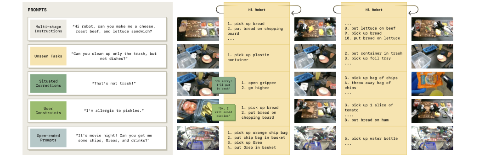
Bolting a diffusion/flow action expert onto a pretrained VLM is what makes real-time continuous control possible — and, this paper shows, it also significantly damages both training speed and the semantic knowledge transferred from the VLM, because gradients from freshly-initialized continuous modules corrupt the backbone. The fix is insulation: stop the action expert's gradients from reaching the VLM and keep training the backbone on discrete-token targets (language and FAST-tokenized actions), so semantic transfer survives while inference stays continuous and fast. Comes with a broad ablation of the design space this involves.
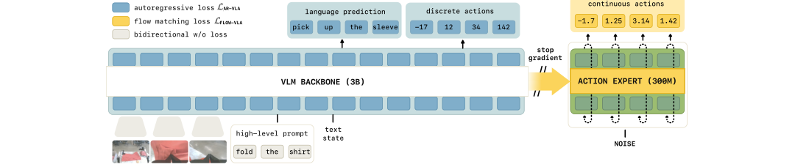
Action chunking gives temporal consistency but not real-time behavior: while the next chunk is being computed the robot either pauses or jerks across the chunk boundary out of distribution. RTC generates the next chunk during execution of the current one by freezing the actions guaranteed to run and inpainting the rest — an inference-time algorithm that drops into any diffusion- or flow-based VLA with no retraining. Evaluated on a new 12-task dynamic Kinetix benchmark and 6 real bimanual tasks, it stays robust to injected latency and keeps high success on precise work like striking a match.
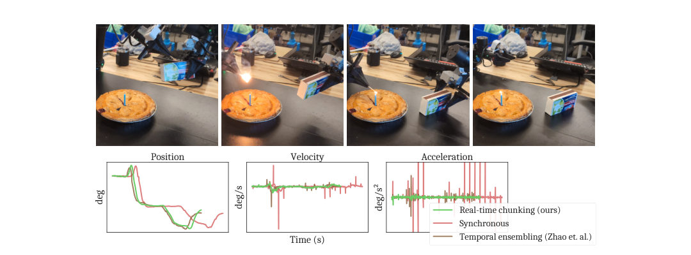
Same problem RTC attacks, different cut. Building on diffusion forcing's per-position noise schedule, πR² splits conditioning into a fast channel (proprioception, refreshed every tick) and an asynchronously updated slow channel (vision-language features), so the policy reacts within a chunk while tolerating stale vision; a latency-adaptive flow schedule treats in-flight actions as inpainting conditioning and emits actions in one denoising step, letting one trained model adapt to whatever hardware latency it meets. Fine-tuned from GR00T-N1.7 on a real xArm6+XHand it replans ~4× faster than the base policy (25Hz, a fresh observation every 40ms), improving success by up to 23% in simulation and 30% in the real world.
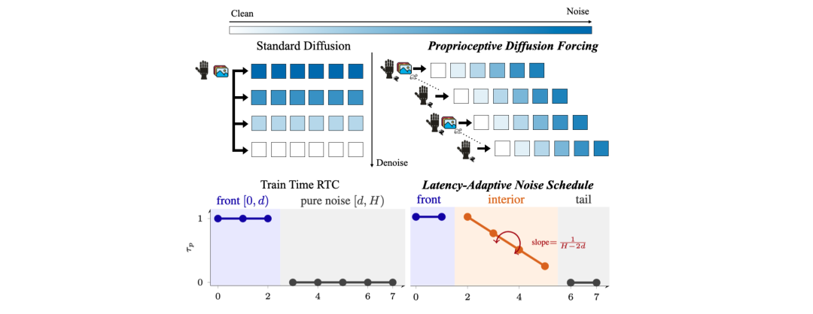